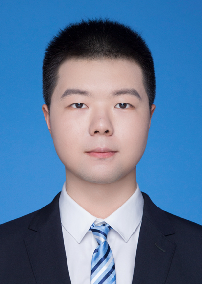
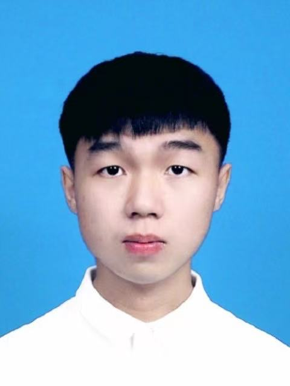
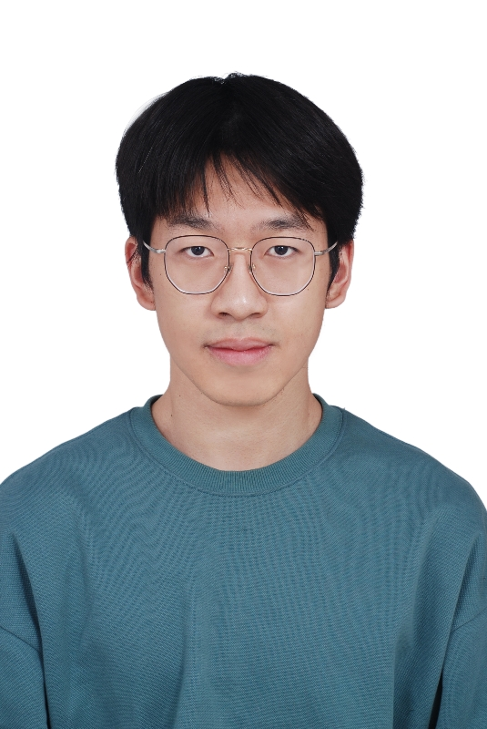

PI

Hao Wu 吴浩
Distinguished Professor
Faculty of Computer Science and Artificial Intelligence
Shenzhen University of Advanced Technology
Meet our research team
Distinguished Professor
Faculty of Computer Science and Artificial Intelligence
Shenzhen University of Advanced Technology

Ph.D. Student
Joint with PolyU
Ph.D. Student
UCAS

Ph.D. Student
UCAS / Nanjing
MS Student
Joint with SUSTech

MS Student
Joint with SUSTech
MS Student
Joint with Shenzhen University
Research Assistant
We are always looking for motivated students and postdocs interested in computational biology and bioinformatics. If you are interested in joining our lab, please send your CV and a brief statement of research interests to wuhao@suat-sz.edu.cn.